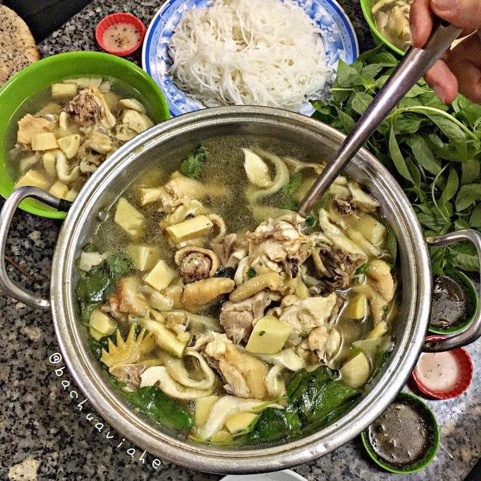

Review 05 Quán Ăn Ngon Khi Du Lịch Đà Lạt
1. Lẩu mực siêu khổng lồ Khap Bun Kha
Ẩm thực Thái Lan rất nổi tiếng với sự kết hợp hài hòa của các nguyên liệu và gia vị khác nhau mang đến cho thực khách những trải nghiệm khó quên. Ai ăn đồ Thái một lần mà nhớ mãi, không muốn ăn lần thứ hai, thứ ba. Chính vì sự yêu thích đó mà các món ăn Thái đã được chế biến và bày bán ở nhiều quốc gia khác nhau, trong đó có Việt Nam.
Nhà hàng Thái Khap Bun Kha có vị trí đắc địa, nằm ngay trung tâm thành phố Đà Lạt. Tại đây, thực khách sẽ được mang đến những món ăn nổi tiếng của xứ sở chùa vàng. Các món ăn ở đây hầu hết được đông đảo thực khách từ Việt Nam đến nước ngoài đánh giá cao.
Tại Thai Khap Bun Kha, các món ăn được chế biến từ các loại hải sản tươi sống như tôm càng hay mực, được đầu bếp chính của nhà hàng nhập trực tiếp và chọn lọc mỗi ngày. Nhà hàng luôn chú trọng đến vấn đề an toàn vệ sinh thực phẩm, luôn đặt sức khỏe của thực khách lên hàng đầu, nhà hàng Thái Khap Bun Kha đã đưa vào hoạt động hệ thống lò nướng chân không AirFryer vô cùng hiện đại. .
Điều này có nghĩa là nhà hàng hoàn toàn không sử dụng dầu mỡ trong việc chế biến bất kỳ món nướng nào nên hầu hết các món ăn của nhà hàng đều có thể làm hài lòng hầu hết thực khách dù khó tính. nhất là những người sợ mỡ máu cao.
Bên trong nhà hàng trang trí phòng riêng vô cùng bắt mắt và thẩm mỹ cho những ai có nhu cầu đặt tiệc sinh nhật và cần không gian riêng tư thân mật hơn.
Một số thông tin thêm về Thai Khap Bun Kha:
Địa chỉ của quán ở 26 Nguyễn Văn Cừ, Phường 1, thành phố Đà Lạt.
Số điện thoại liên hệ 0633.523.399 hoặc 0868.919.239.
Nhà hàng mở cửa 7 ngày trong tuần và từ 10 giờ sáng đến 10 giờ tối.
Đặc biệt, Lẩu Khap Bún Kha cực ngon dành cho 5 người với mực khổng lồ, tôm càng tươi ngon mà giá chỉ có 280 nghìn đồng. Nếu sợ ăn không hết, bạn có thể gọi một nồi lẩu nhỏ với giá chỉ từ 120.000đ đến 160.000đ.
2.Bánh căn ngon ở Đà Lạt
Bánh Căn Đà Lạt là một món ăn sáng hấp dẫn của thành phố ngàn hoa, bạn sẽ dễ dàng bắt gặp các quán bán bánh Căn dọc các tuyến phố tại Đà Lạt. Nhưng để thưởng thức món bánh Căn Đà Lạt với đầy đủ hương vị, bạn có thể tham khảo 4 quán dưới đây:
1. Quán bánh căn Đà Lạt - số 7 Tăng Bạt Hổ, đây là quán bánh Căn khá ngon tọa lạc ngay con đường trung tâm thành phố Đà Lạt, rất thuận tiện cho việc di chuyển của bạn.
2. Quán bánh căn bình dân - Đối diện số 62 Phan Đình Phùng. Quán này hơi xa trung tâm một xíu, nhưng bù lại chất lượng và hương vị sẽ không làm bạn thật vọng. Giá ở đây là 20 000đ/1 đĩa.
3. Quán bánh căn 22 Tăng Bạt Hổ, quán nằm ở trung tâm thành phố, ở số 22 đường Tăng Bạt Hổ. Quán này cũng nằm tại trung tâm thành phố, giá bánh Căn Đà Lạt tại quán là 25 000đ/1 đĩa.
4. Quán bánh căn số 4 Tăng Bạt Hổ- 4 Tăng Bạt Hổ. Cùng tọa lạc trên con đường Tăng Bạt Hổ, quán bánh Căn Đà lạt này mang đến cho du khách những cảm nhận khác biệt bởi hương vị độc đáo của những chiếc bánh được tạo ra ở đây.
3. Lẩu gà lá é

Trời đêm Đà Lạt lạnh lại nhiều sương mù nữa nhưng được cùng bạn bè ngồi cạnh bên nồi lẩu gà lá é đang sôi sùng sục đưa mùi nước dùng bay tứ tung rồi cùng thưởng thức miếng thịt gà ngọt săn chắc vừa ăn vừa hàn huyên chuyện trò thì cái đói, cái lạnh đêm tại đây chẳng là gì nữa rồi. Lưu ý là hãy nhớ lá é khi nhúng vào nước lẩu không nên để lâu quá nhé các bạn, chỉ cần ăn hơi tai tái một chút thôi để cảm nhận rõ được vị thơm thơm, bùi của nó.
Một lưu ý nữa cho các bạn là vì quán này rất rất đông khách mà diện tích quán lại khá nhỏ nên thường xuyên xảy ra tình trạng hết chỗ. Có những ngày 6 giờ chiều đặt chân đến quán đã hết sạch cả bàn ngồi, thế nên bạn nên đến sớm nhiều chút hoặc ghé đặt chỗ từ trước để đảm bảo an toàn và lịch trình nhé. Bằng không thì bạn có thể kiên trì chờ đợi cho tới khi có bàn rồi vào đó ngồi, nói trước là như thế sẽ rất là lâu đấy.
Nếu đã đến Đà Lạt thì bạn hãy nếm lẩu gà lá é một lần cho biết và chắc chắn là bạn sẽ không phải thất vọng về bất cứ điều gì từ cả giá cả lẫn hương vị món ăn đâu nhé.
4. Lẩu bò Ba Toa
Món lẩu thứ ba bạn nhất định phải thử khi đến Đà Lạt chính là Lẩu Bò Khu Ba Toa. Lẩu bò ở đây nổi tiếng với phần thịt bò dày, to, mềm và ngon ngọt. Chưa kể trong lẩu còn có gân bò, đuôi bò, gầu bò đầy đặn. Nhắc nhở một chút thôi là đã đói rồi, bụng muốn sôi lên rồi.
Lẩu bò Ba Toa thơm mùi bò núi. Ngoài nước lẩu có nhiều thịt bò, lẩu bò ở đây còn có mì trứng và nhiều rau xanh cho những ai thích ăn rau. Nhiều người nói đùa rằng rau ở Đà Lạt xanh và chất lượng hơn những nơi khác. Nước dùng lẩu ở đây cũng được nhiều người đánh giá là ngon, đậm đà, ăn vừa miệng. Ngoài ra, giá một nồi lẩu cũng rất hợp lý, chỉ khoảng 250 nghìn là ăn thoải mái. Nồi lẩu nhiều thịt cho 4 người ăn là no.
5. Bánh tráng nướng ngon ở Đà Lạt
1. Bánh tráng nướng đường Nguyễn Văn Trỗi số 61 Nguyễn Văn Trỗi. Bánh tráng nướng trên đường này đã tạo được thương hiệu riêng, bánh rất ngon có giá 10 000đ/1 chiếc.
2. Bánh Tráng Nướng số 112 Nguyễn Văn Trỗi, bỏ qua quán bánh tráng nướng đầu tiên, đến với quán thứ hai này bạn sẽ được thưởng thức món Pizaa Đà Lạt với những hương vị rất ngon và mang sự khác biệt. Giá bánh tráng nướng ở quán 112 Nguyễn Văn Trỗi là 10 000đ/1 cái.
3. Quán bánh tráng nướng Dì Đình địa chỉ: Ngã ba Hoàng Diệu - Trần Nhật Duật, Tp. Đà Lạt. Đây là quán bánh tráng nướng Đà Lạt khá nổi tiếng với du khách gần xa, giá chỉ từ 8000 đến 10 000đ/1 cái.
4. Quán bánh tráng nướng Đà Lạt - 53 Nguyễn Văn Trỗi, Tp. Đà Lạt. Quán này được đánh giá khá ngon với các đầy đủ hương vị, giá 1 chiếc bánh ở đây là 10 000đ.
5. Quán bánh tráng nướng Cô Hoa - 56 Thông Thiên Học, Tp. Đà Lạt đây là quán bánh tráng nướng rất ngon nhưng chủ yếu phục vụ người địa phương với giá 10 000đ/1 chiếc.